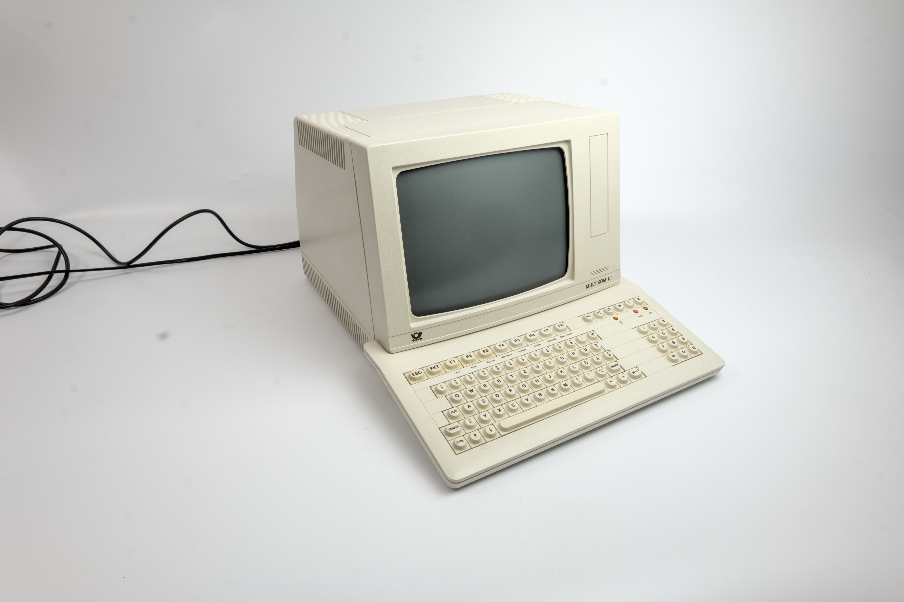

The Vending Machine for Screens
West Germany's Bildschirmtext charged you for every screen you received. A chip-card reader in the terminal was the meter, pages were priced like candy, and the meter itself was the flaw the Chaos Computer Club read like a postcard in 1984.

In the early 1980s, every rich nation built its own pre-internet, and each one was a bet about what a computer should feel like. France gave away free terminals and got the messageries roses. Britain's Prestel aimed at business. Japan painted its pages like faxes, because kanji made text too expensive to send as characters. And West Germany's Deutsche Bundespost — the postal monopoly — built one with a coin slot.
Bildschirmtext, literally "screen text," launched nationwide in September 1983. The dedicated terminal was a boxy object: a keyboard, a screen showing 40×24 semigraphic characters in 32 of 4096 colors, a numeric page keypad for jumping to numbered screens, and a slot for your chip card. You dialed in over a V.23 modem — and the Bundespost was the only source of that modem; you could not bring your own. Then you paged. And every page you received cost money.
The price was set by the page's provider: from one pfennig up to 9.99 marks per page, or up to 1.30 marks a minute for time-charged ones. The screens could have arrived through an ordinary box, but the meter had to live somewhere, so it lived in the hardware — in that chip-card reader. Identity and credit, one ritual: slot the card, look at a screen, pay for a screen. Browsing was spending. Pay-per-view as an interface paradigm, decades before anyone called it a microtransaction.
The French, meanwhile, gave Minitel away — millions of terminals, flat-rate pages, the most successful videotex on Earth. The contrast is almost too clean. France treated the screen as infrastructure and got scale. West Germany treated the screen as merchandise and got a meter. The museum keeps both, and they read like a controlled experiment in the economics of attention: Minitel the flat-rate table d'hôte, BTX the à la carte menu with a price printed on every page.
The meter had a secret weakness, and it was the very thing that made it a meter. Data moved unauthenticated, in plaintext — nothing signed, nothing sealed. In 1984, Wau Holland of the Chaos Computer Club retrieved a bank's secret BTX password by reading the wire. The press turned it into "the hack that emptied a bank"; the reality was stranger, smaller, and more instructive — the machine built to count your money could be read from across the room like a postcard. It became the first mass-media hacking incident in Germany, and my research files call it the first famous remote payment-hacking incident. That is the bit I want to keep: the meter's trust, billing, and economics were the interface, and interfaces can be cracked.
The 1980s genuinely believed information had a price tag and that you could bolt on a machine to collect it. The museum has the family portrait: the Quotron II, the terminal Wall Street rented by the month, and the Famicom Network System, the game console that traded stocks and bet on horses. BTX was that belief with the meter fixed front and center — and the belief failed hardest exactly there.
Kraftwerk, who sang about the future more honestly than most, had already called it. Their "Computerliebe," from 1981, has the narrator dialing the still-experimental service: "Ich wähl die Nummer, rufe Bildschirmtext" — I dial the number, I call Bildschirmtext. A love song about a paid videotex connection. Even the robots knew the romance was in the connection, not the bill.
BTX never reached Minitel's scale. The forced modem rental, the per-screen price, the fear left by the hack — uptake stayed low, and the service drifted into Datex-J, then into T-Online's access software, and finally into history. The last BTX access was switched off at the end of 2001, made obsolete by the Internet it had tried to pre-enact.
But its questions are still live. What is a screen worth? Who meters the meter? What happens to reading when it is a purchase? Every paywall and every in-app purchase descends from that 1983 decision to put a price on each page and a card reader in the terminal. It was a vending machine for screens — and we have all been inserting our cards ever since.